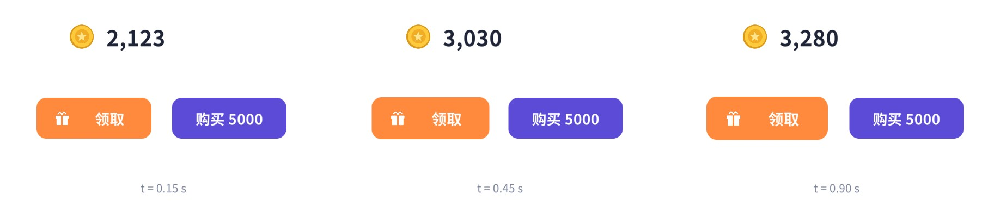
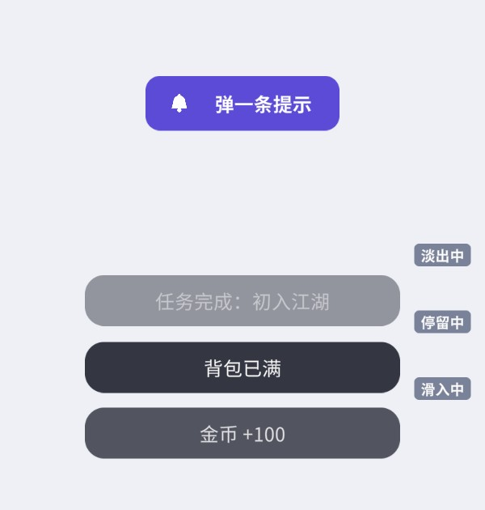
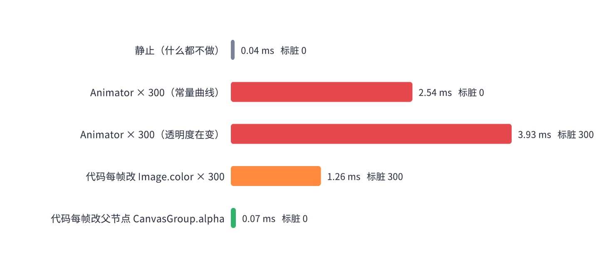

同样一个弹窗，“啪”地出现和带着一点回弹弹出来，给人的感觉完全不同。动效是界面质感的最大来源，也是最容易写乱、最容易拖垮性能的地方。这一章先从零写一个不到 300 行的补间系统，把“时间 → 状态”做成可以随意跳转的纯函数；再用它做弹窗、列表入场、飞金币、转场、Toast 这些天天要用的动画；最后讲清楚为什么不建议用 Animator 做大量 UI 动画，并给出实测数据。
补间（Tween，来自 in-between）指的是：给定一个属性的起点值、终点值和持续时间，由程序自动算出中间每一帧的值。UI 动效几乎全部可以拆成若干个补间：弹窗的缩放从 0.6 到 1、透明度从 0 到 1；列表项的位置从右侧 160 像素处到 0；金币数字从 1280 到 2480。
把它写成公式，任意时刻 t（从 0 到时长 d）的值是：
t/d 是 0~1 的“线性进度”，缓动函数 ease 把它映射成“有节奏的进度”。这个公式里没有任何“上一帧的值”——给定时刻，状态唯一确定。这一点非常重要，它决定了补间系统可以随时跳到任意时刻，本章所有配图都是这样拍出来的：批处理拍图时不会进入 Play 模式，Update 和协程都不会执行，我们直接调用 Evaluate(t) 把动画摆到 t 秒的样子。
与之相对的常见写法是在 Update 里“每帧朝目标靠近一点”：pos = Vector2.Lerp(pos, target, 10 * Time.deltaTime)。它写起来很省事，但结果依赖帧率（帧率不同轨迹就不同）、无法精确控制时长、永远不会真正到达终点，也没法跳到中间某个时刻。这种写法适合“跟随”（摄像机跟随、血条缓降），不适合需要设计的动效。
缓动函数决定了动画的“性格”。下图是本章补间系统支持的 12 种常用缓动，横轴是线性时间 0→1，纵轴是输出进度，两条虚线是 0 和 1：
读曲线的诀窍：曲线越陡，那一段越快。
实现就是把这些公式翻译成 C#，写法与 easings.net 上的标准公式一致：
Mathf.Lerp（参数会被夹到 0~1），超出部分被截掉，回弹就消失了。本章所有插值都用 LerpUnclamped。时长方面，经验值是：按钮反馈 0.1~0.2 秒，弹窗、面板 0.25~0.4 秒，页面转场 0.4~0.6 秒，奖励演出可以更长。UI 动效宁短勿长：玩家每天要打开同一个界面几十次，0.8 秒的弹窗动画第三次看就嫌慢了。
开始写代码之前，先明确这个补间系统要满足的需求，后面每个设计决定都能在这里找到理由：
为什么不直接用 DOTween 这类成熟的第三方库？在实际项目里用它们完全没问题，它们功能全、性能好。本书自己写一个，一是不依赖第三方插件，二是看清补间系统的骨架：它其实很小，核心只有三个类。理解了骨架，用第三方库时也知道它们在做什么、坑在哪里。
核心是 Evaluate(time)：减去延迟得到本地时间；延迟期间停在起点；按时长求出当前是第几次循环、循环内的进度；超过总循环次数就停在终点；往返模式下奇数次循环倒着播；最后经过缓动函数交给子类的 Apply。整个过程只依赖传入的 time，所以可以任意来回跳。运行时的 Tick(dt) 不过是“累加时间、调 Evaluate、到点了触发 OnComplete”。
Tick 开头的 targetDestroyed 检查用的是 Unity 重载的 == 运算符：目标物体被 Destroy 之后，C# 引用并不是 null，但和 null 比较返回 true。补间发现目标没了就自动结束，避免在已销毁的对象上抛 MissingReferenceException——这是 UI 动效最常见的报错来源（界面关了，动画还在跑）。Sequence 自己没有目标，所以它重写了 targetDestroyed：只要有一个子补间的目标没了，整条时间线就结束——否则切换场景后时间线还会继续驱动子补间，照样报错（这正是作者用配套工程逐个场景跑冒烟测试时抓到的一个真实问题）。
链式设置写成泛型扩展方法 SetEase<T>(this T t, ...) where T : TweenBase，返回的仍是调用者自己的类型。如果写成基类的实例方法、返回 TweenBase，那么 tween.SetEase(...) 之后类型就丢了，后面再也点不出 Tween<T>.From 之类子类特有的方法。
一个补间由“取值函数、写值函数、终点、时长、插值函数”定义，用委托表达就能支持 float、Vector2、Color 乃至自定义类型。起点默认在创建时读取当前值。这个设计简单可预测，但有一个坑要记住：如果先创建了一个把 alpha 设为 0 的补间并立即 From(0)，再创建一个“淡出到 0”的补间，后者读到的起点就是 0，结果“从 0 淡到 0”。本章的 Toast 案例就踩到了这个坑，修复方法是显式写出起点 .From(1, false)（第二个参数 false 表示不立即应用）。
Sequence 本身也是一个 TweenBase，所以序列可以嵌套、可以循环。Append 接在当前末尾，Join 与上一个同时开始，Insert 放到指定秒数。难点在于任意时刻跳转时，多个补间可能修改同一个属性，谁说了算？
规则是两步：先把还没开始的补间按开始时间倒序放到各自的起点，于是同一属性上最早开始的那个的起点最终生效；再把已经开始的补间按开始时间正序推进到当前时刻（已结束的停在终点），后开始的覆盖先开始的。对照图 15-2：Evaluate(0.15) 时，C 还没开始、被放到起点（缩放 1），然后 A 推进到 0.15 秒覆盖了缩放——结果是 A 的中间值，正确；Evaluate(0.7) 时，A 停在终点（缩放 1），C 推进到 0.2 秒覆盖缩放——结果是 C 的中间值，也正确。无论正着播、倒着跳，结果都与时间一一对应。
回调（AppendCallback）只在真正播放（Tick）时触发，检查本帧走过的时间段 (before, after] 内有哪些回调点；Evaluate 跳转不会触发回调，否则拍一张截图就可能执行一次“发奖励”。
第一次 Play 时自动创建一个 DontDestroyOnLoad 的物体，在它的 Update 里推进所有活动补间。几个细节：Update 过程中新加入的补间先放进待加入列表，下一轮再并入，避免遍历时修改列表；Kill 只是打标记，统一在遍历时移除；单个补间抛异常时记录日志并移除它，不影响其他补间；Kill 之后同一帧又 Play 的补间可能还在列表里，加入前先查重。在编辑器非运行状态调用 Play 会给出警告——这时应该用 Evaluate。
SetUnscaled() 让补间使用 Time.unscaledDeltaTime。游戏暂停通常是把 Time.timeScale 设为 0，这时所有用 deltaTime 的动画都会停住；暂停菜单、设置弹窗本身的动画必须用真实时间，否则暂停菜单永远弹不出来。本章的弹窗、转场都设置了 Unscaled。
“弹一下”和“抖一下”不需要专门的缓动类型，用一个 0→1 的数值补间驱动自定义的包络函数即可：sin(πk) 从 0 升到峰值再回到 0，乘上随时间衰减的系数；抖动则是高频正弦乘衰减。Tw.Value 是最灵活的工具，后面的贝塞尔飞行、数字滚动都靠它。
淡入淡出一个面板，可以逐个改面板里所有 Graphic 的 color.a，也可以改面板根节点上 CanvasGroup 的 alpha。效果相同，开销却差很多：Graphic.color 的 setter 会调用 SetVerticesDirty()，因为颜色存在每个顶点里，这个元素要重新生成网格；而 CanvasGroup 的 alpha 作用在 CanvasRenderer 的继承透明度上，原生层合批时直接乘上去，不需要任何 Graphic 重建网格。15.4 节的实测中，每帧改 300 个 Image 的 color 会让 300 个元素全部进入重建队列，改父节点 CanvasGroup 则一个都不会。另外，CanvasGroup 的 interactable / blocksRaycasts 还能顺便控制交互，动画期间防误触非常方便。
目标：打开时半透明遮罩淡入，面板从 0.6 倍弹到 1 倍并淡入；关闭时面板缩小淡出，然后隐藏。动画可以被打断（关闭动画没播完又点了打开），动画期间不响应重复点击。
Popup 撑满画布，下面两个子节点：Dim（全屏黑色 Image，alpha 0.6，挂 CanvasGroup）和 Panel（弹窗本体，挂 CanvasGroup）。PopupAnim.Show，关闭按钮调用 PopupAnim.Hide（配套场景用 PopupDemo 脚本在 Start 里绑定）。一个常见的变体是“从点击的按钮处弹出”：打开前把 Panel 的位置设到按钮处、缩放设为 0.2，然后同时补间位置到屏幕中心、缩放到 1。玩家会清楚地感知到“这个弹窗是那个按钮打开的”，关闭时再缩回按钮位置。坐标换算方法与飞金币案例相同。
几个工程细节：遮罩比面板快（0.6 倍时长）、面板淡入只用一半时长，这样面板在“弹”的过程中已经完全不透明，回弹看得清楚；关闭用 InBack（先微微放大再缩小）比单纯缩小更有“收回去”的感觉，且关闭比打开快；Hide 一开始就把 interactable 设为 false，关闭动画期间连点“收下”不会触发两次；Show 和 Hide 开头都 Kill 掉正在播放的动画，避免两个动画同时写同一个属性。
目标：打开任务列表时，每一项从右侧滑入并淡入，相邻两项错开 0.07 秒，形成“刷”地一下依次出现的效果。
这里有个必踩的坑：列表项的位置由 VerticalLayoutGroup 控制。直接对列表项的 anchoredPosition 做动画，下一次布局重建（任何一项尺寸变化、新增一项）就会把它拉回原位，动画被“吞掉”。正确的做法是让布局管外层、动画管内层：每个列表项 Item 由布局控制，它下面的第一个子节点 Body 撑满 Item、承载全部内容，动画只改 Body 的 anchoredPosition 和 CanvasGroup。
入场的反面是退场。切换页签时，旧列表可以让各项按相反顺序（从最后一项开始）快速淡出，再让新列表依次入场；退场的错开时间和时长都应比入场更短，通常取一半左右。也可以让错开时间随序号递减（前几项间隔大、后面越来越密），长列表依次出现时不会显得拖沓。这些变化都只需要改 Build 里计算 start 的一行公式。
错开时间（stagger）是这类动画的灵魂：0.03 秒以下几乎看不出先后，0.1 秒以上又显得拖沓，0.05~0.08 秒比较舒服。列表很长时，只给屏幕内可见的前十几项做动画，后面的直接显示——否则第 50 项要等 3.5 秒才出现。和第 18 章的虚拟列表配合时，只在首次打开时播放入场，滚动复用的项不要再播。
呼吸：可领取的奖励按钮在 1 ~ 1.06 倍之间缓慢往返，提示玩家“点我”。无限循环 + 往返 + InOutSine，两端的停顿自然：
OnDisable 时 Kill 掉补间并把缩放复原：按钮被隐藏再显示时，不会停在 1.03 倍这样的中间值，也不会出现两个呼吸补间叠加。
数字滚动：金币、分数从旧值滚到新值，带千分位，滚完后弹一下。注意“显示值”和“真实值”分开存：滚动过程中真实值已经是新值，任何逻辑判断都用真实值；连续两次加钱时，第二次从当前显示值继续滚，不会跳回去。
抖动：余额不足时“购买”按钮左右抖一下，比弹一个提示框更快地告诉玩家“不行”。

目标：领取奖励时，十几枚金币从宝箱处炸开一圈，再沿弧线依次飞向顶栏的金币图标；每到一枚，图标弹一下；顶栏数字在第一枚到达时开始滚，最后一枚到达时滚完。
每枚金币两段动画：炸开（0.3 秒，从宝箱中心到周围的随机点，OutCubic，同时从 0 放大）；飞行（0.55 秒，沿二次贝塞尔曲线飞到目标，InCubic 越飞越快，像被“吸”进去，同时缩小到 0.55 倍）。飞行段逐枚错开 0.05 秒。二次贝塞尔需要一个控制点，取起终点连线中点往侧面偏移 220 像素，左右随机，这样金币会走两种方向的弧线，不会挤成一条线。
贝塞尔路径不是“属性从 A 到 B”，没法用 AnchorPos 补间表达，就用 Tw.Value(0→1) 驱动一个参数 k，在回调里按公式 B(k) = (1−k)²P₀ + 2(1−k)kP₁ + k²P₂ 计算位置。
整段演出是一个 Sequence：每枚金币的炸开、飞行、到达时隐藏、目标弹一下都用 Insert 放到各自的时间点；数字滚动也是序列里的一个补间。随机数用固定种子的 System.Random，保证同一时刻的画面固定——这既方便截图，也方便 QA 复现问题。
节奏上有几个可调的点：炸开半径决定“爆发感”，飞行时长和缓动决定“吸入感”，错开时间决定金币串的长度，目标的弹跳强度决定“到账”的确认感。通常最后一枚到达后再让数字多滚一小段（代码里多加了 0.15 秒），数字停下的瞬间和最后一次弹跳对齐，整个演出会显得收得很干净。金币数量不必等于奖励数额，十枚左右视觉上最舒服；奖励越大，可以多放几枚、炸开半径更大。
坐标换算是这个案例的另一个要点：宝箱和目标图标在不同的父节点下，金币在专门的飞行层（FlyLayer，放在层级最后，保证画在最上面）里移动。代码用 layer.InverseTransformPoint(rt.TransformPoint(rt.rect.center)) 把任意 RectTransform 的中心换算到飞行层的本地坐标，不管目标在顶栏、背包按钮还是滚动列表里都能飞对。金币数量多或领取频繁时，Instantiate 应换成对象池（第 17 章伤害飘字有完整的对象池实现）。
目标：切换界面或场景时，用一个全屏遮罩“盖住 → 切换 → 揭开”。提供三种形状：斜向擦除、以点击位置为圆心的圆形收缩、噪声溶解。
转场遮罩是一张全屏 Image，形状由 Shader 决定（结构与第 14 章的 UI Shader 相同，保留了 Stencil 和裁剪）：
三种模式都输出一个 0~1 的覆盖率乘到 alpha 上，_Progress = 0 时完全透明，1 时完全盖住，中间是带柔边的分界。圆形模式要乘宽高比，否则在 16:9 的屏幕上是椭圆；圆的初始半径取“圆心到最远屏幕角的距离”，保证从任意圆心开始都能完全盖住。
这里有意用了材质实例：屏幕上只有一个转场遮罩，不存在“实例打断合批”的问题，直接改材质属性最简单（对比第 14 章的讨论）。实例通过 IMaterialModifier 生成，场景里序列化的仍是原始材质资源。
转场的关键在于“盖住之后再切换”：Cover(onCovered) 的回调里执行真正的切换（这里是切换两个页面，项目里可能是 SceneManager.LoadSceneAsync），切换完成再 Reveal()。转场期间遮罩的 raycastTarget 打开，吃掉所有点击，防止玩家在半盖住的状态下点到旧界面的按钮。加载耗时较长时，盖住后再显示一个加载进度，等加载完成再揭开。
和场景加载配合时要注意时序：SceneManager.LoadSceneAsync 返回的 AsyncOperation 可以把 allowSceneActivation 设为 false，让新场景加载到 90% 时停住；在转场遮罩完全盖住之后再允许激活，激活完成、新场景的界面初始化好之后再 Reveal。转场遮罩所在的 Canvas 要挂在 DontDestroyOnLoad 的物体上，否则旧场景卸载时它会跟着被销毁，玩家会看到一闪而过的空白帧。如果新场景第一帧要做大量初始化（实例化大量 UI、读取配置），可以在 Reveal 之前多等一两帧，把卡顿藏在遮罩后面。
目标：屏幕下方弹出一条短提示，停留 1.6 秒后淡出；连续弹出多条时，旧的往上让位，最多同时显示 4 条。

Toast 的策略也值得想一想：同样内容的提示连续出现时（比如玩家连点“背包已满”的按钮），应该合并或者只刷新停留时间，而不是叠出四条一模一样的提示；重要程度不同的提示可以分级，系统公告走另一条通道，不和“金币 +100”这种轻提示抢位置。超出上限时本实现直接移除最旧的一条，也可以改成排队，等前面的淡出后再显示。
每条 Toast 的完整生命周期是一个序列：滑入 + 淡入 → 停留（AppendInterval）→ 淡出 → 回调里销毁。代码注释里的那行 From(1, false) 就是 15.3 节提到的“创建时取起点”的坑：滑入时的 From(0) 已经把 alpha 设成 0，淡出补间不显式写起点，就会读到 0。作者第一次拍图时最上面那条 Toast 完全不见了，查下来正是这个原因。第 16 章的 UI 框架会把 Toast 做成独立的层级，这里的实现可以直接搬过去。
Unity 的 Animator 配合 Animation 窗口可以可视化地 K 帧，美术很喜欢用它做 UI 动画。按钮的 Transition 也支持 Animation 模式。但项目规模一大，Animator 驱动的 UI 往往成为性能热点。原因要从两层看：
启用的 Animator 每帧都要评估状态机、采样当前状态的所有曲线、把结果写回绑定的属性——不管曲线是不是常量、动画是不是已经播完停在最后一帧。一个“播完了就静止不动”的 UI 动画，只要 Animator 还启用着，这笔开销就每帧都在。屏幕上几百个带 Animator 的图标（背包格子、技能按钮、列表项），每帧就是几百次状态机评估。
Animator 写 UI 属性时，绕过了 C# 属性的 setter（比如 Graphic.color 的 setter），直接改序列化字段，然后通知组件“动画属性已应用”。Graphic 对这个通知的处理是：
// 摘自 com.unity.ugui 1.0.0 Runtime/UI/Core/Graphic.cs
protected override void OnDidApplyAnimationProperties()
{
SetAllDirty();
}
注意是 SetAllDirty——布局、顶点、材质全部标脏，比代码里改 color（只标顶点脏）还重。动画改的如果是 RectTransform 的位置、尺寸，还会牵动父级的布局组。BaseMeshEffect 也有同样的处理（13.4 节）。
为了用数字说话，作者在配套工程里做了一个实验：300 个 Image，每个挂一个 Animator。准备两段循环动画：一段是“常量曲线”（缩放恒为 1、alpha 恒为 1，看起来一动不动），一段是 alpha 在 1 和 0.6 之间往复。对照组是：什么都不做、代码每帧改 300 个 Image 的 color、代码每帧改父节点 CanvasGroup 的 alpha。每种情况跑 300 帧，每帧依次执行“驱动动画（手动调用 Animator.Update）→ Canvas.ForceUpdateCanvases()”，用 Stopwatch 统计平均每帧耗时，并用下面这个探针统计每帧有多少 Graphic 进入了重建队列：
探针利用了 CanvasUpdateRegistry.TryRegisterCanvasElementForGraphicRebuild 的返回值：它内部是 AddUnique，元素已在队列里时返回 false，说明它本帧已被标脏。

| 情况（300 个 Image） | 每帧耗时 | 标脏的 Graphic |
|---|---|---|
| 静止（什么都不做） | 0.042 ms | 0 |
| Animator，常量曲线 | 2.541 ms | 0 |
| Animator，alpha 在变 | 3.931 ms | 300 |
| 代码每帧改 Image.color | 1.260 ms | 300 |
| 代码每帧改父节点 CanvasGroup.alpha | 0.070 ms | 0 |
怎么读这组数据：
这组数字是在编辑器批处理模式下、手动调用 Animator.Update 测得的，只统计了 C# 侧的 Canvas 更新，不含原生层合批和 GPU 绘制。真机上的绝对值会不同，但相对关系有参考价值。配套场景 Ch15_AnimatorCost 在 Play 模式下实时显示“本帧有多少 Graphic 等待重建”，可以开关 300 个 Animator 对比，并打开 Profiler 的 CPU 和 UI 模块观察 Animator 与 Canvas.SendWillRenderCanvases 的耗时。
除了 Animator，Unity 还有旧版的 Animation 组件（Legacy）和 Playables API。旧版 Animation 没有状态机，只是按名字播放剪辑，评估开销比 Animator 小，适合“播一次就完”的简单 UI 动画；但它同样在播放期间每帧写属性、同样触发 Graphic 的 SetAllDirty。Playables 适合需要在代码里混合、精确控制时间的复杂演出。无论哪一种，“播放期间每帧写属性”和“写 UI 属性触发重建”这两层开销都存在，区别只在于第一层的大小。真正决定性能的，仍然是同时处于播放状态的动画数量和它们改的是什么属性。
还有一个常被问到的问题：Animator 的 Culling Mode 能不能帮 UI 省开销？Culling Mode 依据的是 Renderer 是否可见，而 UI 元素没有 Renderer，Animator 无法据此判断可见性，所以对 UI 来说最可靠的办法是在不需要时直接 enabled = false，或者让所在物体 SetActive(false)。
animator.enabled = false。折中方案也很常见：美术用 Animation 窗口调好曲线，程序把它导出成 AnimationCurve 字段，交给补间系统的 SetEase(AnimationCurve) 使用——既保留了美术调曲线的自由，又避免了 Animator 的常驻开销。
同一个“0.3 秒淡入”，项目里常见三种写法，各有适用场景：
| 写法 | 优点 | 缺点 | 适合 |
|---|---|---|---|
| 协程（IEnumerator + yield return null） | 流程写成顺序代码，等待、分支一目了然 | 物体被 SetActive(false) 时协程直接停掉且不会恢复；StartCoroutine 有分配；无法跳到中间时刻；多个协程同时改同一属性很难管理 | 以“流程”为主的逻辑：等网络返回再播动画、多步骤的引导 |
| Update 里手写插值 | 无额外依赖，适合持续性的跟随 | 每个动画都要自己管理计时、状态、结束条件；大量 MonoBehaviour 的 Update 本身有调用开销 | 跟随类效果：血条缓降、相机跟随、摇杆回弹 |
| 补间系统 | 声明式、可组合、可打断、可跳转、统一驱动 | 需要一个库（本章自己写了一个）；每次创建补间会分配委托对象 | 几乎所有“从 A 到 B”的界面动效 |
协程有一个在 UI 里特别容易踩的坑：界面关闭时常用 SetActive(false)，这会立即终止这个物体上所有协程，再次打开时协程不会自己恢复，动画停在半路。补间系统由独立的 TweenRunner 驱动，不受目标物体激活状态的影响；需要“隐藏时暂停”的话，可以在 OnDisable 里显式 Kill 并复位，就像 Breathing 组件那样。
三种写法也经常组合使用：用协程写流程（“播放弹窗动画 → 等它播完 → 开始飞金币”），每一步的动画交给补间，用 OnComplete 或在协程里轮询 tween.isComplete 衔接。
补间系统让动画的写法变简单，但它本身不是零成本的，在高频场景下要留意三点：
Tween<T>，会分配补间对象本身，以及取值、写值两个 lambda——如果 lambda 捕获了局部变量（几乎总是），每次还会分配一个闭包对象。偶尔打开一个弹窗时这点分配无所谓；但如果每帧都在创建补间（比如每次刷新数字都新建一个滚动补间），就会持续产生垃圾。常见的优化是让组件持有补间并复用（NumberRoller 就只持有一个补间引用，新目标值到来时先 Kill 旧的），或者在补间库层面做对象池。成熟的第三方库在这方面做了大量工作，这也是项目中使用它们的主要理由之一。DOTween、LeanTween、PrimeTween 等都是 Unity 社区常用的补间库，本书不放它们的代码，只说明它们和本章实现的对应关系，便于你在项目中迁移思路：
rt.AnchorPos(to, d).SetEase(...).Play() 在这些库里通常是创建即自动播放的一行代码。自动播放写起来更省事，但也意味着无法像本章这样先构建、再选择 Evaluate 还是 Play。无论用哪一个库，本章强调的几条原则都适用：动画结束不留常驻开销、可打断、逻辑不依赖动画、选代价小的属性做动画。
代码只是实现手段，什么样的动效“好”，有一些通用的经验：
SetSpeed(float)：全局时间缩放之外的单个补间速度系数；再增加一个全局静态系数 Tween.globalSpeed 实现“减少动效”选项。Reverse()：让序列倒着播放（提示：Evaluate 天然支持任意时刻，倒放只需让 Tick 中的时间递减）。用它把弹窗的关闭动画写成打开动画的倒放，并比较与单独设计的关闭动画的观感差别。Tw.Value 驱动第 13 章的 RadarChart，实现换装备时属性从旧值过渡到新值的动画。